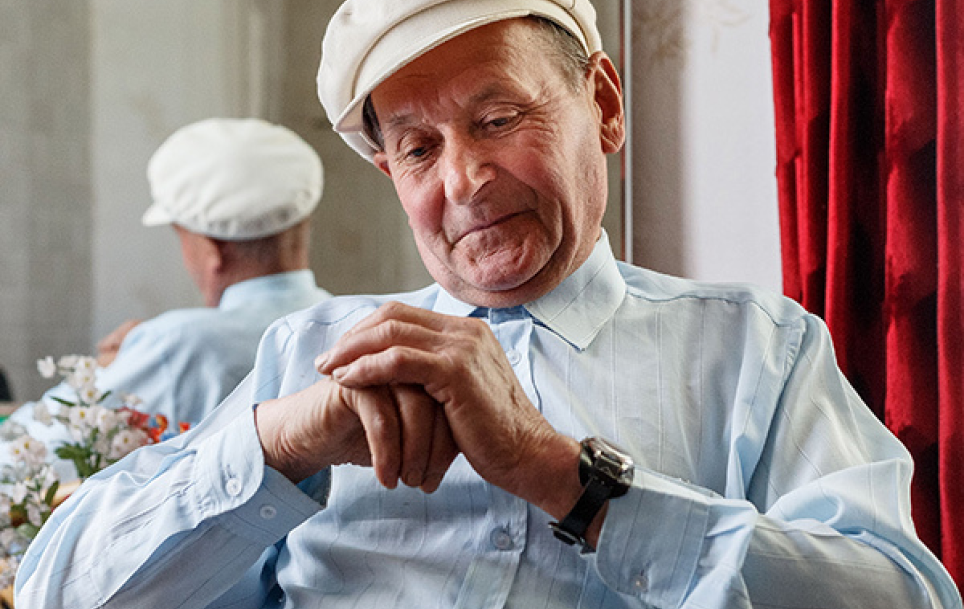
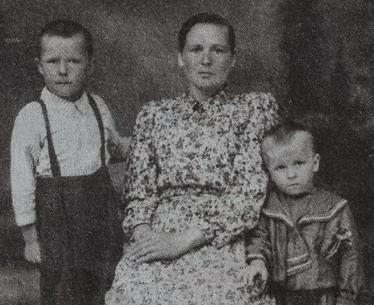
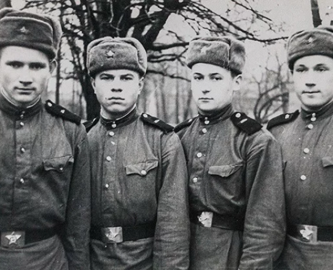

Дети на войне
ДЕНЬ 22 ИЮНЯ 1941 ГОДА ВЫДАЛСЯ ЯРКИМ, СОЛНЕЧНЫМ...

Коля Дорогокупец жил с родителями и двумя сестрами на хуторе между деревнями Могильно и Радовня (Ивановский район Брестской области) недалеко от железной дороги. Мальчику здесь нравилось: можно бегать с соседскими ребятишками, смотреть на аистов, чибисов и других птиц. Особая детская радость – когда мама печет из теста фигурки буслят с сушеной черникой, съесть сначала ягодки. Жизнь прекрасна, когда тебе всего шесть лет! Для Коли так и было, пока не наступило воскресенье 22 июня 1941 года.
День выдался ярким, солнечным. Все шло своим чередом, но под вечер к железнодорожной станции подлетели два самолета с крестами на крыльях, резко снизились, и от них оторвались черные точки.
– Сначала мы увидели фонтаны земли, а через несколько секунд услышали взрывы. Нас, малых детей, мама быстро спрятала от осколков в капустные грядки. К вечеру на хутор вернулся отец и сказал, что началась война.
На третий день пришли враги с машинами и лошадьми. Сельчане притихли, уже не собирались на посиделки, но, как и раньше, косили сено, работали в поле. Недели через две, когда установилась оккупационная администрация, вывесили приказы: за укрывательство красноармейцев – расстрел, за несдачу радиоприемников и оружия – расстрел…
Было страшно, но местные жители очень поддерживали партизан, которые на каждом хуторе могли найти и обогрев, и пищу. Зимы тогда выдались холодными, до 40 градусов мороза. При свете коптилок, лучин крестьяне вязали для лесных бойцов носки из домашней шерсти, варежки (обязательно с двумя пальцами, а не с одним, чтобы можно было стрелять).

Мама и браться, родившиеся после войны
– Помню, как проходили отряды партизанского соединения Ковпака под командованием легендарного Петра Петровича Вершигоры. Они оставляли населению зерно, муку и просили, чтобы им отдали хлеб, рушники для перевязки ран.
Когда партизаны убили коменданта Ивановской полиции Петренко, фашисты стали расстреливать по списку семьи. В тот день уничтожили 76 человек.
– Рядом с нами располагался еще один хутор – Казака. С его сыном Геной мы были ровесниками, и в тот день я как раз был у него. К хутору подошли двое солдат, взяли нас обоих за воротники и повели к дому. Тут на телеге подъехали еще фашисты и староста Тихон, – рассказывает Николай Николаевич. – Тихон указал на меня: этот пацан не из этой хаты. Солдат дал мне подзатыльник, и я побежал домой. Позже моя мама Фекла Сидоровна рассказала, что, когда увидела из окна телегу с карателями, направляющуюся к хутору Казака, то бросилась наперерез повозке с криком: «Тихон, там мой сын Коля!» Не побоялась, что саму убьют.
Сыновей Казака Геннадия и Степана и их мать расстреляли. По счастливой случайности на хуторе не было хозяина и его дочери Гали.

Армейское фото(второй справа)
Жили в постоянном страхе. Дети слушали разговоры женщин о том, что если придут гитлеровцы и станут расстреливать, то пусть пуля попадет сразу в сердце, чтоб не мучиться.
На хуторе было четыре избы, в каждой по 6–7 семей. И никаких распрей, раздоров. Общая беда сплотила людей. Делились последним куском хлеба, одеждой. Единственное огорчение, когда лошадь добралась до муки и съела полмешка. Все переживали, чтобы она осталась жить.
В холодную и голодную зиму 1944-го начались жестокие бои по всему Днепровско-Бугскому каналу. После 40-дневной обороны партизаны и гражданское население стали уходить за Припять. Коле с мамой и сестрой пришлось идти пешком по глубокому снегу. Не спали по несколько суток. Так добрались до деревни Березичи.
– Все, что было у матери, – два цветастых головных платка. Один у нас украли, а второй мама сняла со своей головы, пошла по деревне и выменяла на пуд ржи.
После освобождения Ивановского района 16 июля 1944 года семья Дорогокупцев вернулась и обнаружила, что их дом сожгли. Поселились в хате деда, стали налаживать жизнь.
В то время начали открывать школы, закрытые с приходом фашистов. Для этого приспосабливали пустующие дома. За партами вместе сидели и семилетние, и 11-летние дети. Бумаги, перьев и чернил не было. Писали на обрывках газет и коричневой бумаге от мешков из-под цемента.
День Победы Николаю Николаевичу запомнился обилием красного. На каждом доме висели алые лоскуты: рубахи, косынки – что угодно. Флагов у людей тогда не было. Спросили у мамы, что это такое? «Это Победа», – ответила она.
– С фронта вернулся в 1946 году отец. В том же году я пошел в школу, затем окончил семилетку (это как теперешние девять классов), пинский электротехникум связи, отслужил три года в армии – в Брестской крепости. Много лет работал в районном узле связи, стал его начальником. При мне сменилось три поколения телефонных станций, – рассказывает Николай Дорогокупец. – С женой Галиной Николаевной мы вместе 54 года. У нас трое детей и семеро внуков. Моя судьба сложилась счастливо. Вот только когда вспоминаю военное время, чувствую комок в горле. Почему-то события из детства помнятся отчетливее, чем все, что было потом...